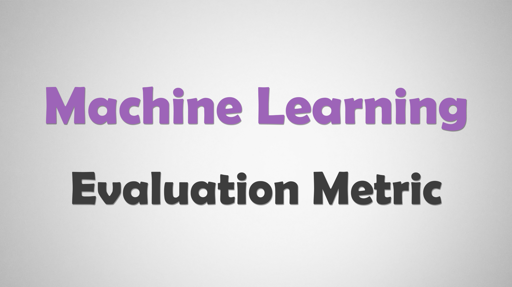

 Evaluation Metric References Category Machine Learning Post Evaluation Metric Created July 14, 2023 參考文獻列表 標題 作者 網址 機器學習\統計方法: 模型評估-驗證指標(validation index) Tommy Huang 機器學習-常見的評估指標 Madi Evaluation Metrics : 分類模型 Ryan Lu Precision, Recall, F1-score簡單介紹 CHEN TSU PEI [Day10] 評估模型指標 may1005 如何辨別機器學習模型的好壞？秒懂Confusion Matrix Yi-Chang Chen